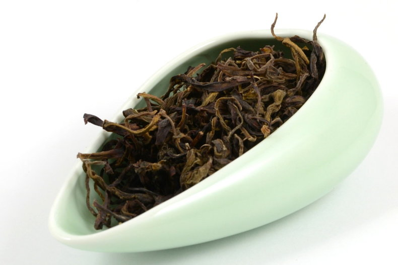
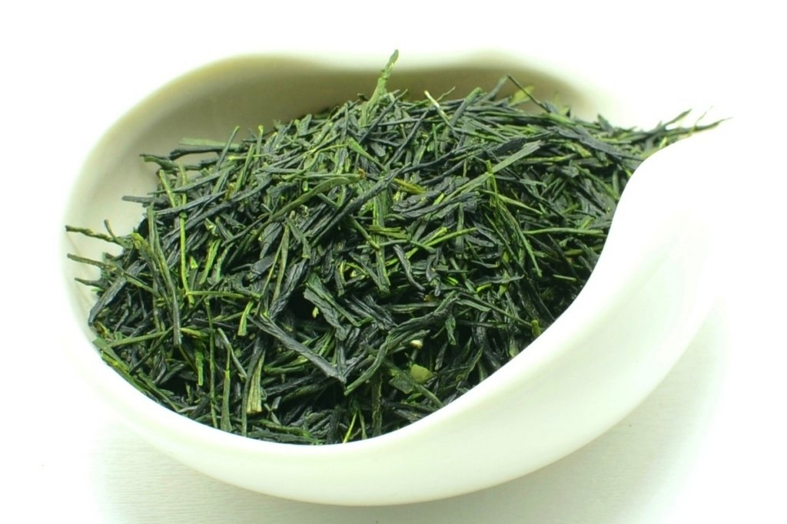
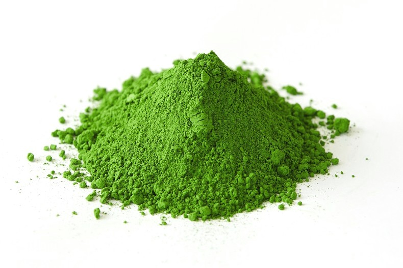
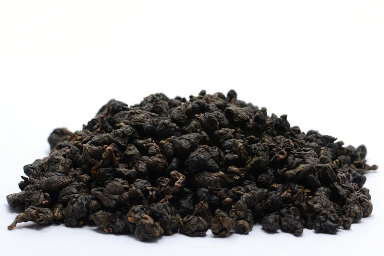
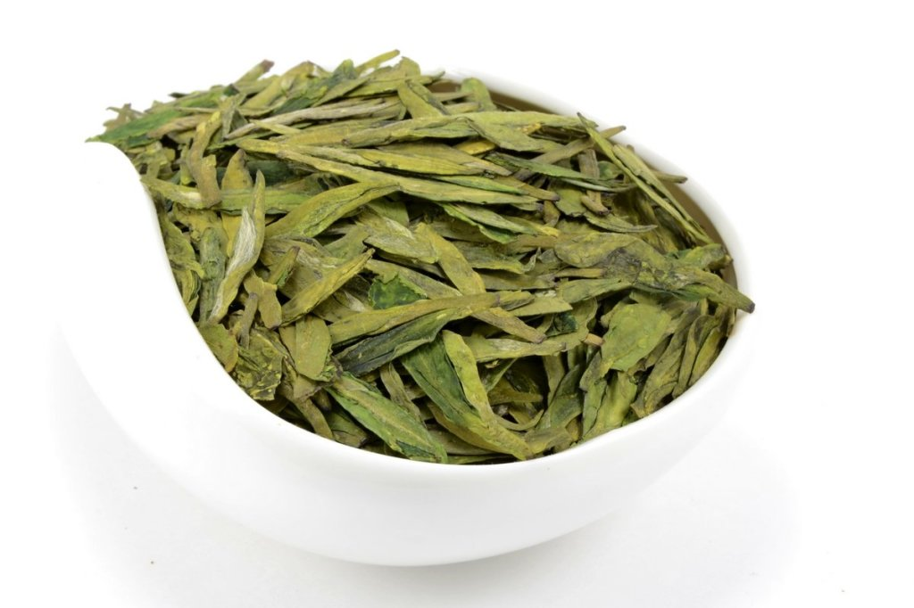

|
Чай от признанных чайных технологов. Призеры и победители чайных конкурсов. Достаточно редкий чай, который вы мало где найдете
и даже совсем эксклюзивный чай, который вовсе не возможно купить на общедоступных рынках.
|
|

|

|
Бай Цзи Гуань — Bai Ji Guan — 白鸡冠 — «Белый Петушиный Гребень»
«Белый Петушиный Гребень» (Бай Цзи Гуань, 白鸡冠) – достаточно редкий, оригинальный улун из
провинции Уишань. Является одним из представителей знаменитой «четверки» Великих Утесных Кустов.
Листья этого сорта имеют одну особенность – зеленовато-желтый оттенок, чем и отличаются от своих
«родственников». Еще одним отличием является изогнутая форма листа, который направлен вверх и
внешне схож с гребешком петуха.
Для приготовления такого чая требуется огромный опыт и мастерство. Одним из важных моментов
производства является грамотно раскрыто баланс аромата и вкуса. Если мастер обладает недостаточным
навыком, то чай будет просто пережаренным и посредственным. Именно по этой причине мастеров-умельцев
сегодня не так уж и много. А чай – настоящая редкость и находка на рынке чая.
Дегустация: Внешний вид, аромат, букет, вкус, послевкусие.
Внешний вид – буро-коричневые, зеленовато-красные листики среднего размера, аккуратно скрученные
в тонкие жгутики. Аромат сухого чая мягкий, утонченный, сочный, цветочно-хлебный, с тонкими пряными
штрихами. Настой яркий, прозрачный, живой, меняющийся от пшенично-зеленых оттенков к янтарным.
Букет готового чая многогранный, сложный, яркий, ускользающий из поля внимания. Раскрывается
в мягкой, бисквитно-цветочной гамме с оттенками специй и пряностей, фруктов, ягод, древесины
и хлеба. Аромат теплый, нежный, текучий и плавный, пряно-цветочный, сладко-фруктовый. Вкус глубокий,
маслянистый, плотный, мягкий, сладковатый, слегка вяжущий, скользящий. Меняется от пролива к
проливу, настоящая феерия оттенков. Послевкусие освежающее, искристое, переливающееся и долгое.
Заключение.
Превосходный церемониальный улун, интересный, живой и очень утонченный. Требует умелого и внимательного
обращения, а также времени для чаепития. Очень сильно реагирует на температуру воды. Обстоятельный
и конкретный, достойный представитель премиального чая. Хороший вариант как для знакомства новичкам,
так и искушенным ценителям, гурманам. Тот самый чай, когда хочется новых красок в повседневной
жизни.
Эффект, воздействие, состояние.
Приятно снимает усталость, создает поле гармонии, спокойствия и уединенности. Чай для наполнения
новыми эмоциями, бодрости духа и неспешного вечера. Мягко тонизирует, собирает ум и приводит
в порядок эмоции.
Как заваривать Бай Цзи Гуань. — Посуда из фарфора или пористой глины с тонкими стенками;
— Вода с температурой 90-95*С;
— Соотношение сухой заварки 4 гр. на 100 мл. воды;
— Заваривать быстрыми проливами с постепенным увеличением времени настаивания;
— Выдерживает 8-10 завариваний.
|
Инь Чжэнь Шэн Ча. Куньмин. 2007 год.
«Серебряные Иглы» — весьма необычный, но этим и привлекательный шэн пуэр. Да-да, это именно
шэн. Приготовленный на фабрике Куньмин из урожая 2007 года. В качестве сырья использован купаж
из листьев и почек высокого качества. Очень высокого качества! Последние, кстати, присутствуют
в чае в очень большом количестве, тем самым формируя яркие, необычный и запоминающийся вкус.
Дегустация.
Внешний вид чая – круглая лепешка, весом 357 гр., достаточно мягкой прессовки. Без труда ломается
руками, расслаивается пуэрным ножом или шилом. Разбирается на небольшие побеги почек и листьев,
обильно покрытых ворсом серебристого оттенка. Аромат сдержанный, спокойный, утонченный пряно-фруктовый,
с едва уловимыми хвойными нюансами. Настой чистый, яркий, золотисто-песочный, уходящий в процессе
заваривания в красные тона.
Букет готового чая многогранный, мягкий, тонкий, меняющийся на протяжении чаепития. Фрукты и
пряности приятно дополняют оттенки меда, сухофруктов, трав, с нюансами цитрусов и смол. Аромат
нежный, сладковатый, фруктовый, с оттенками меда и ягод. Вкус объемный, сочный, маслянистый,
чуть сладкий, с нотками меда, специй и цветов. В процессе чаепития меняется от нюансов белого
чая, до выдержанных, хороших шэнов.
Нюансы. Итоги.
Необычный, очень интересный шэн для различных поводов и ситуаций. Этот чай определенно вызывает
эмоции и надолго отпечатывается в памяти. К нему хочется возвращаться за настроением и атмосферой,
которую он создает. Теплую, душевную и легкую. Отлично подходит как для знакомства с шэн пуэром,
так и для новых открытий в этой области. Хорош как в чаепитии проливом, так и в варке. Не капризный,
податлив и прост в заваривании. Очень «игривый» в плане температуры воды. Заваривая чуть остывшим
кипятком (85-90*С) мы получаем ярко выраженные нюансы белого чая. Завариваем более крутым кипятком
(95*С) и получаем знакомые, узнаваемые ноты шэн пуэра. Легкий, позитивный и дружелюбный чай для
тех, кто любит нюансы и детали. А еще он «бесконечный». В плане того, что выдерживает ну очень
много проливов.
Воздействие.
Хорошо освежает восприятие, наполняет силами и дарит легкость. Мягко тонизирует, создает уютную
и спокойную атмосферу. Настраивает на продуктивный лад. Обладает весьма сильной, выраженной ча
ци (чайной энергией).
Заваривание проливом.
Глиняная посуда для шэн пуэров или фарфор;
Вода с температурой 90-95*С;
Соотношение сухой заварки – 4-5 гр. на 100 мл. воды;
Хорошо заваривается на протяжении 15 проливов.
|
|

|

|
Гёкуро премиум (Удзи, Киото, Япония)
Гёкуро — самый дорогой японский зеленый чай, в переводе означающий «жемчужная роса». Относится
к так называемым «теневым» сортам чая. Крайне не простой, впечатляющий, яркий, имеющий свои тонкости
и нюансы в приготовлении.
Заключаются они в том, что незадолго до сбора чайные кусты затеняют от солнечных лучей. А уже
в процессе приготовления собранные листья пропаривают около 20 секунд, после чего аккуратно сворачивают
руками в форму тонких трубочек. После сушки чай приобретает насыщенный цвет и форму иголок.
Гёкуро (яп. 玉露, «жемчужная роса»). Дегустация.
Внешний вид чая – продолговатые, вытянутые, тонкие флеши, скрученные в трубочки. Цвет изумрудно-зеленый
с салатовыми вкраплениями. Аромат мягкий, тонкий, травянисто-ореховый. Цвет настоя чистый, прозрачный,
живой, пшенично-салатового оттенка.
Букет готового чая утонченный, мягкий, невесомый, травянисто-ореховый, цветочный, с оттенками
кукурузы и тыквенных семечек. Аромат легкий, тонкий, сладковатый, с нюансами орехов и трав. Вкус
густой, плотный, насыщенный, маслянистый, с основной травянистой гаммой и тонкими оттенками семечек,
кешью, бразильского ореха и луговых цветов. Послевкусие долгое и сочное, освежающее, травянисто-сладкое.
Запоминающийся, эффектный чай во всех смыслах. Не смотря на всю свою «воздушность» и утонченность,
готовый букет получается достаточно объемным и глубокий. Вкус удивляет с первого глотка. Ароматом
можно наслаждаться очень долго, пристально изучая все детали. Чай определенно для особенного
настроения и состояния. Умиротворяет, сглаживает и вдохновляет. Приводит мысли и ум в состояние
собранности, спокойствия, точно японский самурай. Оставляет после себя только приятные ощущения
и желание вернуться к нему снова.
Как заваривать Гёкуро
— Фарфоровая или стеклянная посуда;
— Температура воды 60-70*С; (!!!)
— Соотношение сухой заварки: проливом 3-4 гр. на 100 мл. воды; настаивание 1-1,5 минуты – 2-3
гр.;
— В случае с проливами выдерживает полноценных 6-7 проливов. С настаиванием вкус держится 4-5
проливов.
|
Токусен Матча (Маття). Церемониальный.
Токусен Матча премиального качества с крытых, затененных чайных плантаций. Церемониальную
матчу, в отличии от более низкокачественной или кондитерской отличает несколько моментов. В первую
очередь цвет – насыщенный, яркий, с изумрудным оттенком. Вкус – насыщенный, плотный, более интенсивный
и сладкий, в отличии от низких сортов. Также в нем отсутствует выраженная горечь. Аромат – более
глубокий, сложный, интенсивный. Все эти факторы являются признаком чая матча премиального качества.
Собрана и приготовлена в знаменитом регионе Удзи. Сбор сырья происходит исключительно со взрослых
деревьев, возрастом от 30 лет. После того, как выполнены основные этапы производства, листья
проходит финальную сортировку. Из них извлекаются жилки и черенки. При этом к чаю матча высокого
качества применяется исключительно ручная обработка. После чего происходит медленное растирание
в порошок.
Дегустация Матча
Букет готового чая сочный, яркий, обволакивающий, свежий, травянисто-ореховый, с нюансами жаренных
семечек и кондитерки. Аромат нежный, утонченный, деликатный, с нотками спелых ягод, весенних
трав и шоколада. Вкус мягкий, плотный, тягучий, насыщенный, сладковатый, нюансами орехов, тыквенных
семечек, горького шоколада и топинамбура. Послевкусие долгое и обволакивающее, шелковистое.
Яркий, многогранный и очень эффектный чай. Запоминается с первого чаепития. Определенно для
внимательных, уединенных чаепитий без суеты и спешки. Одним словом – премиальный. В нем нет ничего
лишнего. Вкус, аромат, готовый букет – всё очень сбалансированно, выверено в каждом оттенке.
К такому чаю хочется возвращаться снова и снова. Отличный выбор для знакомства с японской чайной
церемонией.
Эффект
Хорошо тонизирует, освежает восприятие и приводит в порядок эмоции и мысли. Настраивает на продуктивный
лад, снимает напряжение, усталость и суетливость.
Как заваривать Матча
В японской чайной церемонии (Тя-Но Ю) матча готовят два раза. Первым делают крепкий чай – койтя.
После чего подают слабый чай – усутя.
Для койтя необходимо:
взять 4 гр. порошка
Охладить воду до температуры 65-70*С
Насыпать чай в большую чашку (тяван), которую перед чаепитием прогревают и вытирают насухо
После того, как поместили чай в чашу, заливаем его водой, количеством в 50 мл
После чего взбиваем вращательными движениями бамбуковым венчиком (часэн) до образования пены.
Для усутя нам понадобится:
1-2 гр. порошка
Охлаждаем воду до температуры 70*С
Кладем в предварительно прогретую и уже сухую чашу чай
Заливаем водой в количестве 70-80 мл
Взбиваем вращательными движениями венчиком до получения пены
|
|

|

|
Конкурсный Лу Гу Дун Дин 2017 года, 3 сливы, LGTTS
Конкурсный
Дун Дин («Морозный Пик») из Лу Гу. В 2017 году стал победителем в категории «3 сливы» по
версии Ассоциации чаепроизводителей дундинов Лу Гу (LGTTS). Традиционное приготовление с многоступенчатой,
сложной технологией и финальной прожаркой на углях фруктового дерева. Такой подход требует огромного
количества времени и сил мастера. В итоге мы с вами имеем уникальную возможность насладиться
многогранностью и утонченностью этого чая. Хочется отметить, что этот Дун Дин ничуть не хуже
еще своего «товарища», Золотого медалиста этого же конкурса. Рекомендуем познакомиться.
Дегустация
Внешний вид чая – небольшие, сферической скрутки шарики темно-коричневого цвета с бурым оттенком
и приятным глянцем. Местами проглядываются короткие черенки. Аромат сухого чая глубокий, интенсивный,
теплый, при этом достаточно нежный, хлебно-пряный, с оттенками фруктов. Настой чистый, живой,
прозрачный, золотисто-янтарный.
Букет готового чая теплый и яркий, многогранный, с меняющимся настроением и мелодией. Мягко
раскрывается во фруктово-цветочной, печеной, чуть пряной, хлебной тональности с нюансами бисквита,
сливок, ягод и меда. Аромат нежный, благоухающий, глубокий, сливочно-фруктовый, сладкий, чуть
цветочный и местами хлебный. Вкус ровный, плотный, шелковистый, скользящий, маслянистый, теплый
и сложный. Меняется на протяжении чаепития от хлебно-пряных, фруктовых и бисквитных нот к ягодно-цветочным,
леденцовым. Послевкусие долгое, сочное и звонкое.
Заключение.
Элегантный, полноценный и запоминающийся улун. Тот самый чай, с которым нужно «церемониться»,
внимательно и не спеша, чтобы ничего не упустить из поля внимания. Он определенно для ценителей
и гурманов. Однако не стоит пугаться и новичкам – Дун Дин весьма пригоден и для знакомства с
чаем высокого качества. Главное здесь не спешить и иметь базовый уровень взаимодействия с чаем.
А для полноценного раскрытия лучше всего использовать чайные пары. Вы не разочаруетесь.
Заваривание проливом.
— Посуда из пористой глины с тонкими стенками или фарфор;
— Вода с температурой 85-95*С;
— Соотношение сухой заварки – 4-5 гр. на 100 мл. воды;
— Заваривать с постепенным увеличением выдержки заварки;
— Вкус держится на протяжении 10-12 проливов.
|
Си Ху Лунцзин — Сиху Лунцзин — Колодец Дракона — 西湖龙井
Сиху Лунцзин , известный как «Колодец дракона» с озера Сиху, считается королем зеленого чая
в Китае. Си Ху Лунцзин — чай, достойный гурманов и искушенных любителей Лунцзина.
Для производства лунцзина используют только верхушки побегов с двумя верхними листьями.
В процессе изготовления лунцзин подвергается обжариванию для остановки процесса ферментации
(окисления веществ чайного листа под действием собственных ферментов во время сушки) и особой
механической обработке, придающей чайному листу нежность. Лунцзин поджаривается в специальных
котлах: лист ладонью придавливается к нагретой поверхности котла, расплющивается и одновременно
окончательно высушивается. Приготовленный таким образом чай не требует сортировки, он является
конечным продуктом и подлежит герметической упаковке. Лунцзин не подвергается ароматизации.
Лунцзин даёт жёлто-зелёный настой с нежным тонким ароматом и богатым вкусом. Чай содержит витамин
C, аминокислоты и катехины, по содержанию которых превосходит все прочие виды и сорта чая.
Дегустация
Заварите 3—5 грам чая в гайвани, вылейте настой и понюхайте чай. Аромат должен быть выраженным,
но нежным и нерезким.
Высококачественный лунцзин оставляет сладкое (а не горькое) послевкусие. Во избежание появления
кислого привкуса не заваривайте лунцзин слишком крепким (не более 5 грам на чашку).
Сухой лист лунцзина высшего сорта — плоский, ровный, с гладкой поверхностью, длиной около 2
см, по форме напоминает сосновые иглы. Слишком длинные или слишком короткие листья могут свидетельствовать
о низком качестве чая.
|